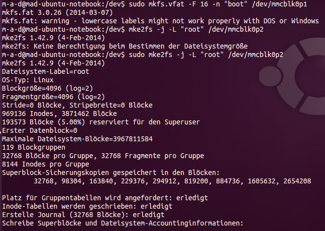

Embedded Linux - Geocaching Modul
Embedded LinuxHochschule Augsburg
Fakultät für Informatik (Prof. Dr. Hubert Högl)
Studiengang Technische Informatik, 6. Semester
Sommersemester 2015
Datum: 2015-04-17 17:53
Matthias Pfitzmayer, <matthias.pfitzmayer@hs-augsburg.de>, #935691
Daniel Schneider, <daniel.schneider@hs-augsburg.de>, #
Matthias Struwe, <matthias.struwe@hs-augsburg.de>, #
Dieser Text steht unter der Creative Commons Lizenz "Namensnennung/Keine kommerizelle Nutzung"
Geocaching Modul
Inhalt
1 Beschreibung der Hardware
Für das Projekt wird das Beaglebone Black verwendet. Gründe hierfür sind der günstige Preis, die gute Verarbeitung und die hohe Leistung bei relativ geringem Energiebedarf.
Zunächst werden wir uns einmal mit der Hard- und Software im Orginalzustand wittmen. Verbindet man ein neues Beaglebone Black via USB mit dem Host-/Entwicklungsrechner so wird eine weitere Netzwerkverbindung geöffnet. Über diese kann man via ssh eine Verbindung zum Target starten.
ssh debian@192.168.7.2
# pwd: temppwd

Es befindet sich bereits eine angepasste Debian Version Linux beaglebone 3.8.13-bone47 auf dem 4 GB großen eMMC Speicher. Es wird per default von der eMMC gebootet und unter Verwendung von Maus, Tastatur und Display könnte man das BBB wie einen rechenpower armen PC verwenden.


1.3 Komponenten

| Komponenten | Model / Ausführung |
|---|---|
| CPU | Sitara AM3358BZCZ100 ARM® Cortex-A8 1GHz dual-core |
| RAM | 512 MB DDR3L @ 800 MHz |
| ROM | 4 GB eMMC |
| IPU | 4 x ARM® Cortex-M4 |
| GPU |
|
| Power Source |
|
| User Input |
|
| Connectors |
|
| PCB |
|
2 Bau einer eigenen Linuxumgebung mit dem Yoctoproject
Zu Begin soll eine neue angepasste Linuxumgebung auf dem Beagelbone Black aufgesetzt werden. Hierzu bedienen wir uns des Yoctoproject. [BBB-YOCTO]
- Herunterladen der Buildumgebung vom Github des Yoctoproject.
git clone git://git.yoctoproject.org/meta-yocto -b dizzy
- Den richtigen USB-Port finden
dmesg
Auf den Port zugreifen - Hierfür benötigt man ein [] wie z.B. Minicom außerdem werden spezielle Befugnisse für das Zugreifen auf den Port benötigt hierfür gibt es 2 unterschiedliche herangehensweisen:
- Ändern der Befugnisse um auf den seriellen Port zugreifen zu dürfen
sudo chmod 0666 dev/<tty of the eth connection to the bbb> # for my system sudo chmod 0666 dev/ttyACM0
- Eigenes Profil zur Gruppe "dialout" hinzufügen um auf den seriellen Port zugreifen zu dürfen
sudo usermod -a -G dialout <username>
2.1 Minicom konfigurieren
# for ubuntu / debian based distributions sudo apt-get install minicom sudo minicom -s
- Einstellungen zum seriellen Anschluss

- Unter A das richtige Device einrichten

- Als default Speichern

- Minicom beenden und neu starten

2.2 Vorbereiten der microSD Karte
sudo fdisk -lu <device_name> # for my system sudo fdisk -lu mmcblk0
- /dev/mmcblk0p1 * 63 144584 72261 c Win95 FAT32 (LBA)
- /dev/mmcblk0p2 144585 465884 160650 83 Linux
- mkfs.vfat -F 16 -n "boot" /dev/mmcblk0p1
- mke2fs -j -L "root" /dev/mmcblk0p2

Yocto Build Download
wget http://downloads.yoctoproject.org/releases/yocto/yocto-1.7/machines/beaglebone/beaglebone-dizzy-12.0.0.tar.bz2Build the Yocto core and bootloader
source oe-init-build-env build Remove the '#' from the #MACHINE ?= "beaglebone"
Remove the '#' from the #MACHINE ?= "beaglebone"
3 Literatur und sonstige Quellen
| [BBB-BSP] | Beaglebone Black Blockschaltpläne http://linuxgizmos.com/beagleboard-x15-features-dual-core-cortex-a15-sitara/ |
| [ELIN-BBB-OS] | Beaglebone Black Operating Systems http://elinux.org/BeagleBone_Operating_Systems |
| [ELIN-BBB-Debian] | Beaglebone Black Debian http://elinux.org/BeagleBoardDebian |
| [BBB-YOCTO] | Yocto Project Beaglebone Black https://www.yoctoproject.org/downloads/bsps/daisy16/beaglebone |